在我们下面要讨论的恒星的距离测量中，变星将起到非常重要的作用。因此在讨论距离的测量之前，我们先来介绍一些有关变星的基本知识。观测发现，有些恒星的光度、光谱特征、磁场等物理特性随时间做周期性的、半规则的或无规则的变化，这种恒星称为变星。更广义地说，一切亮度有变化的恒星，都可以称作变星。例如一对双星围绕公共质心转动，但由于距离遥远，观测者不能把两颗星区分开，他看到的只是一颗星。如果双星中一颗较亮而另一颗较暗，则双星互相掩食的结果可以使观测者看到，这颗星的亮度发生周期性的变化（图2.8）。这类变星称为几何变星或食变星（占变星总数的约 20\% ），它的亮度变化不是由于恒星本身的物理原因，而是双星轨道运动的结果。有的双星亮度变化不明显，但光谱线由于轨道运动的多普勒效应而呈现周期性变化，称为分光双星。本章中我们不讨论此类变星，而只关注本身物理状态的变化引起光变的变星，即物理变星。
实际上，物理变星的“变”也是相对的，没有一颗恒星是绝对不变的。就连我们的太阳——它被认为是最稳定的恒星之一，也时时刻刻在发生着变化，例如剧烈的太阳活动造成的大规模日珥喷发以及显著的耀斑、光斑、黑子等的出现。随着现代天文观测仪器灵敏度的不断提高，许多原来认为亮度不变的恒星，现在也发现有亮度变化，只不过变化的幅度很小。通常把物理变星定义为：由于自身的物理原因，在较长的时间（例如几年、几个月、几天或几小时）内，亮度有明显变化的恒星。同时，这里的“亮度”不仅是指可见光，而是包括一切电磁波段的辐射，因而严格讲应当是光度。物理变星约占变星总数的80%。根据光变的原因，它们分为脉动变星
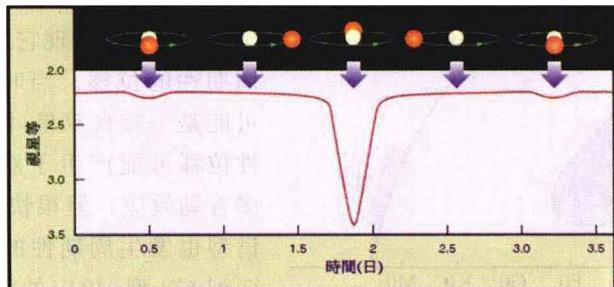
图2.8 食变星的光变曲线。光变是 由于主星与伴星前后相互掩食的结果和爆发变星两大类。物理变星中大约 90\% 是脉动变星，它们的光变是由星体的脉动所引起，即大气层发生周期性或非周期性的膨胀或收缩。按照光变曲线的形状和光变周期的不同，脉动变星又分为若干类型，如造父变星、半规则变星、不规则变星和长周期变星等。爆发变星的光变是由于一次或多次的爆发所引起，且光变的同时伴随有大量的物质抛射。爆发变星也分为超新星、激变变星（包括新星和再发新星等）、早期演化阶段的变星、有延伸气壳的早型变星等不同类型。本节中我们将主要介绍与恒星的距离测量密切有关的变星，其他类型的一些变星将在恒星演化一章中做适当的介绍。
脉动变星是指星体不断地产生径向脉动，即交替地膨胀与收缩，从而引起半径、光度、温度乃至磁场发生周期性或非周期性的变化。脉动变星在赫罗图上不是随机地分布的，而是大部分位于主星序上方的一个区域（见图2.9），其中最典型的有造父变星以及天琴座RR型星。在银河系内已经发现的脉动变星有10000多颗，总数估计有大约 2\times10^{6} 颗，但还是仅占银河系恒星总数的 10^{-6}\sim10^{-5} 。脉动变星是恒星演化到某一不稳定阶段的产物，它们在天文学和天体物理学中的地位
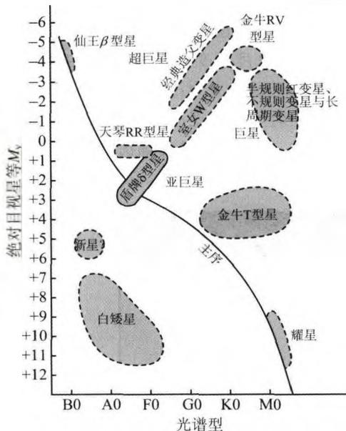
图2.9 脉动变星以及其他 几类变星在赫罗图上的分布十分重要。
经典造父变星典型的例子是仙王座 \delta 星，中文名造父一。它的光变周期是5天8小时46分38秒，周期非常稳定。最亮时的视星等是 3.6^{m} ，最暗时是 4.3^{m} ，亮度相差1.9倍。它的光变首先于1784年被发现，1894年又发现它的光谱中谱线有周期性的位移。当时一些人认为它可能是一颗食双星，因为谱线的周期性位移可能产生于双星轨道运动的多普勒效应。但很快又发现，它的光谱型也发生周期性的变化，从F5型变到G3型，相应的温度变化约为1 500\mathrm{K} ，且变化周期与亮度变化周期完全一致。1914年，美国天文学家沙普利（H.Shapley）最终阐明了，这类
变星的亮度、温度以及谱线的周期性变化，是由于星体的径向脉动而不是双星的轨道运动。径向脉动使得星体体积周期性地膨胀和收缩，这就引起光度和温度的周期性变化，而谱线的位移是由于径向脉动时的多普勒效应。经典造父变星的光变周期一般为 1\sim 50 天，故也称长周期造父变星。它们的光度变幅大致为 0.5^{m}\sim 1.5^{m} ，且光变曲线都很相似，亮度上升时较快而变暗时较慢(图2.10a)。在亮度极
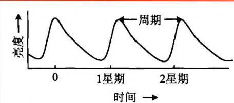
图2.10a 经典造父变星的光变曲线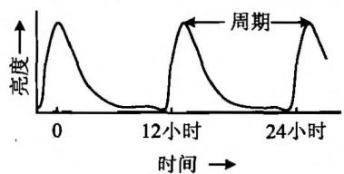
图2.10b 天琴座RR型变星的光变曲线大时光谱型一般为 F 型，亮度极小时为 G 型或 K 型。北极星也是造父变星，只不过光变幅度很小，不足 0.1^{m} 。银河系里已经观测到 500 多颗经典造父变星，它们是黄色的巨星和超巨星，质量为太阳的几倍至 10 倍左右，光度都很大。在其他 30多个河外星系里也观测到了这一类造父变星。从1908年到1912年间，美国女天文学家李维特(H. Leavitt)在研究小麦哲伦云中的造父变星时发现，它们的光变周期越长，光度就越大。这就是著名的造父变星的周光关系(图2.11)。因此，如果知道了一颗造父变星的光变周期(这是容易测量的)，就可以得到光度，从而根据光度和视星等求出它的距离。因为造父变星一般相当亮，在河外星系中也容易被发现，因而周光关系就为我们提供了一种简单而有效的测量天体距离的方法，可以用到恒星、星团乃至星系距离的测量。在这个意义上，造父变星可以说是一把“量天尺”。
上面介绍的经典造父变星一般位于漩涡星系的旋臂上，属于星族Ⅰ（星族的概念将在星系一章中介绍）。观测发现，还有少部分造父变星位于漩涡星系的球状星团中（属于星族Ⅱ），在一些椭圆星系中也有发现，典型星为室女座W星，故统称为室女座W型星。室女座W型星也属于长周期造父变星，它们的光变曲线与经典造父变星相似，但在相同的光变周期情况下，它们的光度要比经典造父变星小1.4 ^{m} 左右，两者的周光关系曲线平行（见
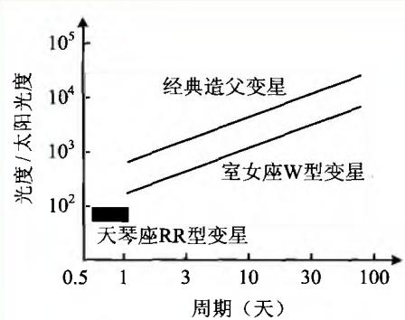
图2.11 造父变星的周光关系图2.11)。有时也把经典造父变星和室女座W型星分别称为I型和II型造父变星。
另一类用于测定距离的变星是天琴座 RR 型星。它们最初是在球状星团里发现的，故常称为星团变星，后来在球状星团以外也发现了许多。它们的光谱型大多属于 A 型，只有一小部分是 F 型。变幅是 0.5^{m} \sim 1.5^{m} ，光变周期很短，大约为 0.05 \sim 1.5 （图 2.10b）天，因而也称为短周期造父变星。目前观测到的天琴座 RR 型星有 6000 多颗，约占脉动变星总数的 1/3。与经典造父变星不一样的是，尽管它们有不同的光变周期，但绝对星等大致相同，为 +0.6^{m} 左右。所以，它们的目视亮度（视星等）就可以直接指示距离。因此天琴座 RR 型星也可以作为第二把量天尺，但精度与适用性不如经典造父变星。
典型代表是鲸鱼座 O 星(中文名蓟藁增二)，它是长周期变星中最亮、最有名、最先发现的一颗。长周期变星是变星中最普遍的一类，已列入星表的有 4000 颗左右。它们的光变周期为70天到700天，光变幅度较大，一般为 2.5^{m} \sim 8^{m} 。这类变星都是红巨星或红超巨星，光谱型大都属M型，少数属S、N和R型。且一般说来，光谱型越晚，周期越长，光度越小，这一点和造父变星恰好相反。大部分长周期变星的亮度变幅和光变周期都有不规则起伏，相对平均值的变化可达 15\% 。
按爆发的规模分为超新星、新星、矮新星、类新星和耀星等。约占变星总数10%。下面我们主要介绍与恒星距离测量有密切关系的新星和超新星。
人们注意到，有时在天空中原来没有星的地方，突然出现一颗很亮的星，亮度在几天之内可以增亮9～14个星等以上，达到极大后又逐渐减弱，在几个月或几年内有起伏地下降到爆发前的状态（图2.12）。这就是新星。少数新星最亮时可以
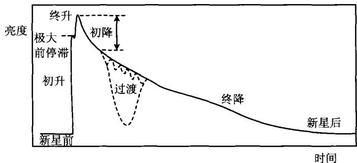
图2.12 典型新星的光变曲线成为天空中最亮的星之一，例如1918年天鹰座新星，亮度超过了织女星，仅次于天狼星。但大多数新星必须借助望远镜才能发现，有些新星在爆发之前甚至暗到连最大的望远镜都观测不到。世界上最早的新星爆发记录在中国，是公元前1300年左右刻在甲骨上的关于“新大星并火”的记录（图2.13），这里的“火”是指天蝎座 \alpha （中文名心宿二）。到17世纪时，我国已有68次新星记录。西方最早的新星记录是公元前134年的“喜帕恰斯新星”。而我国文献对这颗新星记载得比西方更为详细，即《汉书·天文志》所载：“元光元年六月客星见于房”，房宿就是天蝎座。现代发现的银河系新星有200多颗，附近的星系估计每个星系每年出现 10\sim 40 颗。新星爆发非常引人注目，也往往被误认为是新诞生的星。现在知道，新星爆发实际上是恒星演化的晚期，起源于由一颗白矮星和一颗巨星组成的密近双星。白矮星的强大引力把巨星的外层物质吸积过来，当这些主要是氢的物质在白矮星表面堆积到一定程度，就会发生氢的核聚变，突然爆发并把大量物质抛射出去。强烈的气体抛射形成膨胀的气壳，使得亮度急剧增加，因而我们就观测到新星的爆发。新星爆发释放的总能量为 10^{45} \sim 10^{46} erg，抛射物质约为 10^{-5} \sim 10^{-3}M_{\odot} ，抛射速度为 200 \sim 500\mathrm{km / s} 。当膨胀的气壳消散后，一切就恢复到原来的状态。迄今观察到的
最明亮的新星之一是天鹅座1975新星，它以太阳100万倍的光度照耀了3天。有些新星爆发一次后还可以再爆发，称为再发新星，目前已经确认的有9颗。再发新星的光变曲线与第一次爆发的新星很相似，后者经过很长时间后也许会再次爆发。由此可见，新星爆发虽然规模巨大，但还不至于把双星的基本结构破坏掉。
超新星爆发是宇宙中最壮观的天象之一，爆发时光变幅度超过17个星等，最大可达20个星等，即增亮 10^{7}\sim10^{8} 倍。光度极大时可以相当于整个星系的光度，释放能量可达 10^{47}\sim10^{53} erg，是恒星世界最激烈的爆发。爆发结果或者是将恒星物质完全抛散，成为星云遗迹，结束恒星的演化史；或是抛射掉大部分质量，遗留下的部分物质坍缩成白矮星、中子星或黑洞，从而进入恒星演化的晚期和终结阶段。
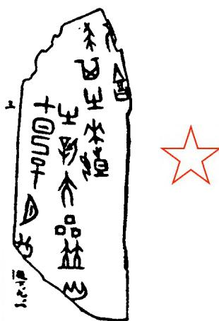
图2.13 公元前1300年新星爆发的甲骨文纪录“七日己巳夕□有新大星并火”超新星爆发后形成很强的射电源、X射线源和宇宙射线源。同时，超新星还是宇宙中重元素的主要贡献者。
在银河系内，超新星出现的次数比新星少得多，是十分罕见的天象。根据中外天文史学家对东方、阿拉伯和欧洲大量古文献的分析整理，目前公认的有记载的河内超新星爆发共有9颗，时间分别是：公元185年（半人马座），386年（人马座），393年（天蝎座），1006年（豺狼座），1054年（金牛座），1181年（仙后座），1408年（天鹅座），1572年（仙后座），1604年（蛇夫座）。这9颗超新星在我国都有记录。最早的公元185年超新星，记录在《后汉书·天文志》中：“中平二年十月癸亥，客星出南门中，大如半筵，五色喜怒，稍小，至后年六月消。”这是世界上唯一的记录。公元386年和393年的超新星，出现在东晋年间，也只有我国有记载。最亮的1006年超新星，除我国的文献记载外，也见于日本、朝鲜、阿拉伯和欧洲的史籍。据资料分析，它最亮时比天狼星亮1600多倍，如《宋史·天文志》里说：“状如半月，有芒角，煌煌然可鉴物。”现在，在它的位置发现有一个射电源，还发现有细微的丝状云，被确认为是那次超新星爆发的遗迹。公元1572年和1604年的超新星分别由丹麦天文学家第谷(B. Tycho)和德国天文学家开普勒(J. Kepler)进行了精确的观测，后人根据他们的观测资料并结合其他国家的资料得出了这两颗星的光变曲线，故它们被分别称为第谷超新星和开普勒超新星。
在这9颗河内超新星中，最著名的是公元1054年，即我国北宋仁宗至和元年爆发的“天关客星”，它在史书中有详细记载，例如：
至和元年五月，晨出东方，守天关，昼见如太白，芒角四出，色赤白，凡见二十三日。（《宋会要》）
至和元年五月己丑，(客星)出天关东南，可数寸，岁余稍没。(《宋史·天文志》)
这里的“天关”是指天关星，即金牛座ζ星；“凡见二十三日”是指白天见到它的天数。综合其他史料可知，这颗超新星突然爆发的时间是1054年7月4日凌晨4时左右，最后消失的日期是1056年4月6日，共见643天。它的遗迹就是著名的金牛座蟹状星云。1928年哈勃测量了蟹状星云的膨胀速度，发现它在900年前会聚为一点，恰好与1054年超新星的历史记录相一致。由此哈勃第一个提出，蟹状星云正是1054年超新星爆发的遗迹。1948年发现，蟹状星云是一个很强的射电源，1963年发现它还是X射线源。1968年又发现它是γ射线源，同年并在它的中心处证认出有一颗射电脉冲星。不久后发现，这颗脉冲星在光学波段以及其他波段几乎都发出同样规律的快速脉冲辐射，这在脉冲星中是十分罕见的。我们现在知道，所有的脉冲星都是中子星。
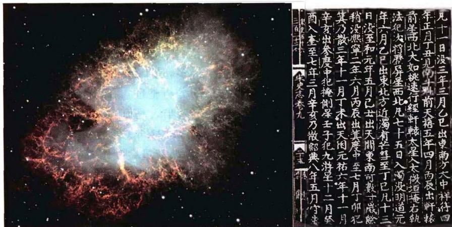
图 2.14 哈勃望远镜拍到的蟹状星云照片，以及 我国史书关于公元1054年超新星的记载现代天文观测共发现银河系中的超新星遗迹约200多个，这些超新星绝大多数是在人类有史以前爆发的，故没有任何文献记载。人们只能从这些遗迹的特征（如辐射谱、偏振等）推断当年超新星爆发时的情况。例如，著名的天鹅座网状星云是5万年前爆发的超新星遗迹，船帆座古姆星云是公元前9000年超新星爆发的产物。而天空中最强的射电源仙后座A，周围有许多暗淡的星云碎片，经仔细分析后发现，它应当是公元1670年前后爆发的一颗超新星的遗迹，但这颗超新星无论东方还是西方都没有记录。估计是由于距离太远(11000光年)并被浓厚的星际物质所遮蔽，所以当时没有引起人们的注意。
由于超新星爆发时的光度最大时可与整个星系相当，因而用大望远镜不难发现河外星系中出现的超新星。第一颗河外超新星是1885年发现的，到1999年底共发现了1650多颗。进入21世纪以来，这个数目有了大幅度增长，至2006年6月的统计已达3500多颗。河外超新星最著名的是1987年在大麦哲伦云中发现的SN1987A。近年来，哈勃空间望远镜发现了许多大红移(遥远距离)的超新星，对它们的观测结果表明，宇宙在加速膨胀。这就是我们在宇宙学部分将要讨论的宇宙学常数或宇宙暗能量问题的观测基础。
根据光变的特点(实质上反映了不同的爆发机制和前身星,我们将在第3章中对此加以介绍),通常把超新星分为I型和II型,且每一型又分为若干子型,例如I型分为[a、lb和lc型。这两大类型的主要特点是:I型超新星的光谱中缺乏氢谱线,表明这类超新星氢含量很低,主要由重元素组成。它们的亮度上升很快,如|a型亮度极大时典型的绝对星等约为 -19.3^{m} (光度达 \sim10^{10}L_{\odot} ),极大之后20~30天内亮度很快下降 2^{m}\sim3^{m} (初降),接着在很长的时间内缓慢下降(见图2.15);爆发时抛射的气壳以很大的速度膨胀,速度可超过10 000 km/s。II型超新星的光谱中有明显的氢发射线,它们的光变曲线在亮度上升和初降阶段与I型类似,但亮度极大时的绝对星等约为 -18^{m} ,比I型要暗将近1.5个星等。大部分II型超新星当极大过后亮度下降 1.5^{m} 左右时,光变曲线上会出现一个缓变的“平台”,而在这之后的一段时间内,光度下降比I型要陡(图2.15);抛射的气壳膨胀速度一般要小于10 000 km/s。II型超新星主要出现在旋涡星系和不规则星系中,而I型超新星在各类星系中都有发现。
1987年2月23日，南美洲智利拉斯坎帕纳斯(Las Campanas)天文台最先观测到一颗在大麦哲伦云中的超新星(图2.16)，最亮时达到5等星的亮度，肉眼亦可见。这是自1604年以来人类在地球上肉眼能看到的唯一一颗超新星，被命名为
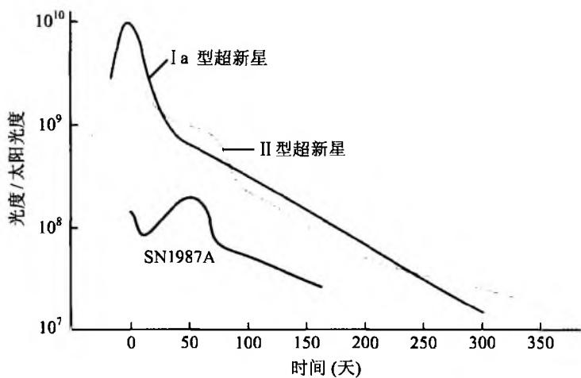
图2.15 两类超新星的光变曲线SN 1987A(SN 即 Super Nova, 1987A 表示 1987 年发现的第一颗超新星, 这是国际上统一的超新星命名规则)。因为这是一次极为难得的近距离观测超新星的机遇, 许多天文学家赶往南半球, 进行光学、射电波段的观测, 各种高空及空间仪器(包括气球、飞机、火箭和卫星运载的仪器)也在其他波段进行全面跟踪观测。观测结果表明, 它的光谱中有很强的氢线, 应属大质量的Ⅱ型超新星, 但光度比Ⅱ型超新星要低, 最亮时的绝对星等只有 -15^{m} 。它的光变曲线也与其他 I 型及 II 型超新星不同, 显得很独特(图 2.15), 亮度初降后又有持续 3 个月的连续上升, 然后才逐渐变暗, 变暗过程中没有出现 II 型超新星普遍具有的“平台”。同时, 根据爆发前后该天区照片的比对，发现它的前身星是一颗蓝超巨星，而不是通常认为的红超巨星。人们猜测，光变曲线的不同可能因此而引起，因为蓝超巨星比红超巨星的半径要小，结构紧密，且金属含量低，约为太阳金属含量的三分之一。哈勃望远镜在SN1987A周围拍摄到一个很亮的气体环(图3.21)，该环以 10\mathrm{km / s} 的速度向外膨胀，与超新星的距离为 0.2\mathrm{pc} ，这么远的距离表明它不可能是在超新星爆发时抛射出来的。有些人认为，SN1987A的前身星曾经历一个从红超巨星向蓝超巨星的演变，演变过程中抛射大量气体形成气壳，超新星爆发时强烈的辐射加热并电离了壳中的气体，于是就形成了明亮的气体环。此外的一个谜是，如果SN1987A属Ⅱ型超新星，按照现代超新星理论，它在爆发后应当坍缩成一颗中子星，但迄今为止在它爆发的位置附近没有发现任何中子星。当然，如果中子星不发出脉冲辐射（即不能成为脉冲星），或辐射方向没有对着地球，我们也就无法看到它。SN1987A另一个重要的观测结果是，它的出现伴随着很强的中微子爆发，日本神冈、美国俄亥俄、意大利和前苏联的中微子探测器都记录到能量很大的中微子流。这些探测器都置于地下深处，从而避免了地球大气和地表附近可能的干扰。数据分析表明，这些中微子来自南极方向，与大麦哲伦云的方向一致，这是人类第一次接收到来自河外星系超新星爆发的中微子。总之，超新星SN1987A已成为检验超新星理论的绝好的太空实验室，至今仍然受到各国天体物理学家的密切关注。它本身及周围的一切细微变化，仍时刻处在各种观测设备的严密监测之中。
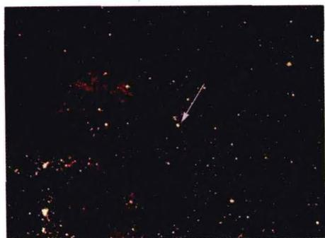
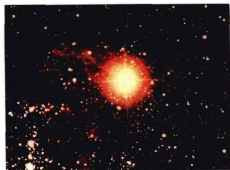
图2.16 超新星SN1987A爆发前后的照片